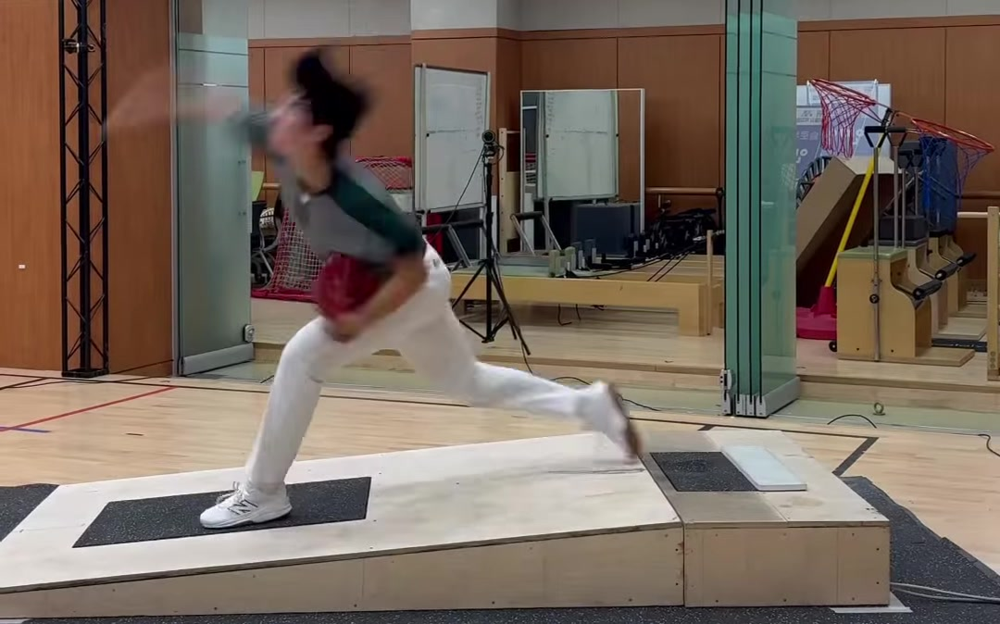
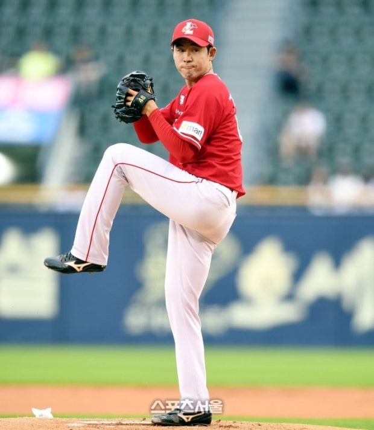
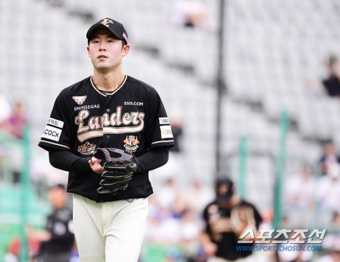
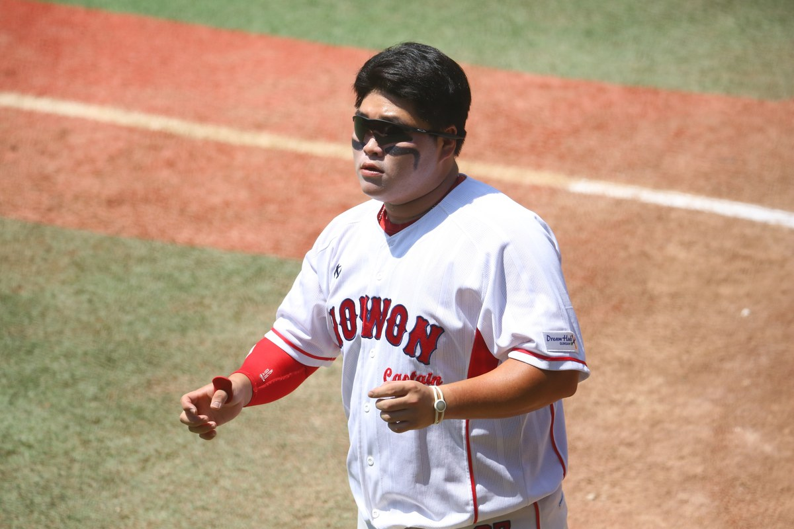

바이오모션 베이스볼 · BIOMOTION BASEBALL
바이오모션 베이스볼 · BIOMOTION BASEBALL
움직임·힘·공의 결과를 함께
한 가지 영상이나 결과 수치에 머물지 않고, 서로 다른 측정 자료를 같은 동작 시점에 연결합니다.
- 고속 3D 모션캡처
- 양발 지면반력 플레이트
- 공·배트 트래킹
- 체력·근기능 평가
BIOMOTION BASEBALL · 하남 감일센터
분석을 이해하는 코치가 선수 특성과 유형에 맞춰 체력·메카닉을 해석하고, 센터 안의 트레이닝·드릴과 재측정까지 연결합니다.
하남 감일 · 지상 2층 150평 · 100% 사전 예약제
투구 동작과 양발 지면반력
설계 조감도 시설 3D 장면은 실제 촬영이 아닙니다.
WHY BIOMOTION BASEBALL
정밀 장비의 데이터를 읽는 분석진
그 근거를 동작으로 옮기는 전담 코치
한 가지 영상이나 결과 수치에 머물지 않고, 서로 다른 측정 자료를 같은 동작 시점에 연결합니다.
이기광 교수의 분석 총괄과 차명주 자문의 프로야구·지도 경험을 바탕으로, 힘의 작용선·회전관성·관절 토크·경계 파워를 선수의 체력·메카닉과 연결해 해석합니다.
분석 총괄·자문 역할 보기 ↗SK 출신 조성훈 투수 코치와 선수 출신 김준엽 타격 코치. 두 코치의 국민대 바이오메카닉스 랩 인턴 연구원 경험을 바탕으로, 분석 근거를 체력·메카닉 훈련에 연결합니다.
투수 코치 ↗타격 코치 ↗

측정된 체력·근기능과 실제 힘을 쓰는 메카닉을 함께 읽습니다. 우선 과제에 맞춰 트레이닝과 동작 큐·드릴을 적용하고, 변화를 확인하며 다음 훈련을 정합니다.
고려대 야구부 현장 지원 사례 보기 ↗3D 동작·양발 힘판·트래킹과 체력 자료를 같은 선수의 근거로 연결합니다.
선수 특성·유형과 개인 동작 근거를 이해하고, 먼저 시험할 과제 1~2개를 정합니다.
선수에게 맞는 체력 트레이닝과 메카닉 큐·드릴을 코치와 함께 적용합니다.
같은 조건에서 동작·에너지 전달·공 결과와 강점의 변화를 확인해 훈련을 유지·조정합니다.
연구·현장 지원 경험
분석진이 현장에서 쌓은 경험을
선수별 분석과 피드백에 연결합니다.
전수 바이오메카닉스 측정·분석 및 피드백 제공
바이오메카닉스 측정·분석 지원
현장 지원 사례 ↗바이오메카닉스 분석 제공
고교 야구부 대상 바이오메카닉스 분석
다수 프로선수에게 개인 맞춤 바이오메카닉스 분석 서비스 제공
01 / FOR PLAYERS & PARENTS
레슨 등록 없이 1회 분석 가능
02 / 3D PITCHING & BATTING SOLUTION
지면반력 → 관절 토크·파워 → 키네틱 체인
확인한 동작 근거를 맞춤 코칭과 재측정으로 연결
키네틱 체인은 다리·골반·몸통·팔이 연결되어 공과 배트를 움직이는 과정입니다. 영상의 모양과 트래킹 결과에 양발 지면반력·관절 토크·경계 파워를 함께 놓고, 에너지가 생성·전달·흡수되는 구간과 관절 부하를 읽습니다.
체형·체력·가동성, 투구·스윙 유형과 고유한 리듬을 함께 봅니다. 그 선수의 같은 시행 안에서 힘의 작용선·관절 토크·회전관성·에너지 흐름이 어떻게 연결되는지 정밀하게 해석해, 강점을 살릴 맞춤 훈련 과제를 고릅니다.
프로·집단 수치는 맥락을 읽는 참고자료입니다. 개선 목표는 확인한 개인 근거로 정하고, 선수 자신의 같은 조건 전후 변화로 확인합니다.
03 / SCIENCE & COACHING
역할과 전문성이 분명한 네 명의 전문가
분석 총괄
바이오메카닉스 분석 총괄
담당 투구·타격 3D 동작 및 지면반력 분석
분석 자문
바이오메카닉스 분석 자문
담당 분석 결과 해석과 훈련 방향 자문
한양대 체육학 학사 · 국민대 생체역학 박사과정 수료

투수 코칭
투수 코치
담당 투구 레슨과 분석에 따른 동작 큐·드릴 지도
2023년 6월 20일 첫 1군 선발 등판 · SSG 소속 두산전 4이닝 무실점


타격 코칭
타격 코치
담당 타격 레슨과 스윙 동작에 맞춘 훈련 지도
국민대 연구팀의 현장 적용 사례
이기광 국민대 교수 연구팀과 고려대 야구부의 협력은 선수 한 명의 측정을 넘어, 동작 분석을 현장 코칭과 연결해 온 과정입니다.
국민대 이기광 교수팀과 협력해 바이오메카닉스 프로그램으로 선수 동작을 수정·보완하는 과정을 소개했습니다.
팀 분석 지원 보도 ↗김지훈 감독이 부임 후 이기광 교수팀에 도움을 요청하고, 과학적 분석을 코칭 방향에 활용한 배경을 보도했습니다.
김지훈 감독 인터뷰 ↗다큐 인사이트는 고려대 야구부가 3년째 측정을 진행하며, 투구·타격의 문제와 훈련 방향을 살피는 현장을 소개했습니다.
KBS 공식 방송 소개 ↗KBS 다큐 인사이트 · 문화일보 보도
국민대 연구팀의 정튼튼 선수 분석·훈련 연계 사례를 KBS와 문화일보가 소개했습니다. 보도는 앞다리 착지와 하체 안정성을 확인하고 훈련으로 연결한 과정을 다룹니다.
이기광 교수와 고려대 야구부의 측정·분석 지원 현장
이기광 교수 연구팀은 투구 중 앞발 착지 이후 앞다리 무릎이 무너지는 동작을 확인했습니다.
문화일보는 앞다리의 버티는 힘을 키우는 하체 훈련과 착지 안정화 과정을 소개했습니다.
SPORTS KU 인터뷰에서 선수는 전년보다 몸통이 일찍 열리는 동작이 줄고 구속과 팔 움직임이 빨라졌다고 말했습니다.
04 / PROGRAMS & PACKAGES
05 / GAMIL CENTER
높은 층고 · 정규 18.44m 투구 거리
투수판에서 뒤쪽 안전망까지 20.60m (설계 기준)
정규 거리 마운드 · 양발 지면반력 측정
지면반력 타석 · 배트와 타구 트래킹
체력 측정과 동작 리포트 설명
경기도 하남시 감일동 376-168 지상 2층
방문 전 일정 문의

RESERVATION & FAQ · BIOMOTION BASEBALL
메일에 적을 내용
메일 앱에서 문의를 보내면, 담당자 안내로 방문 일정을 확인합니다.